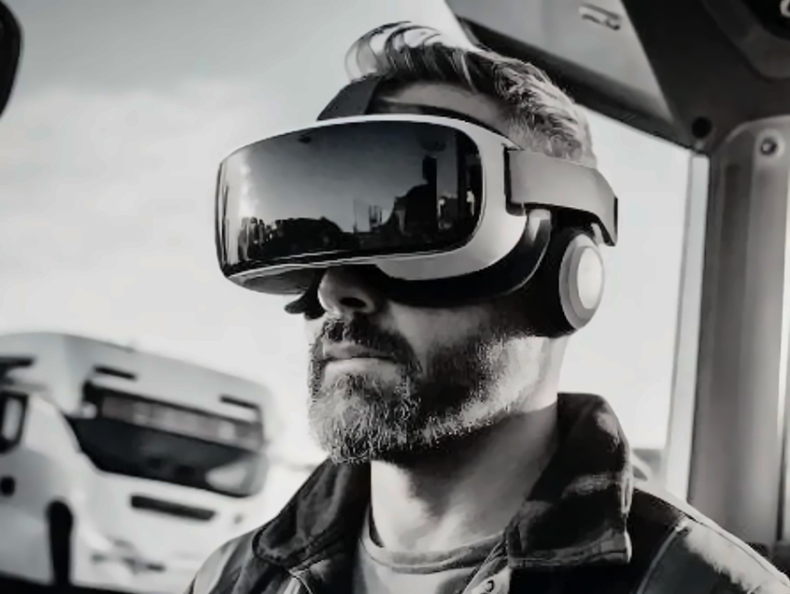
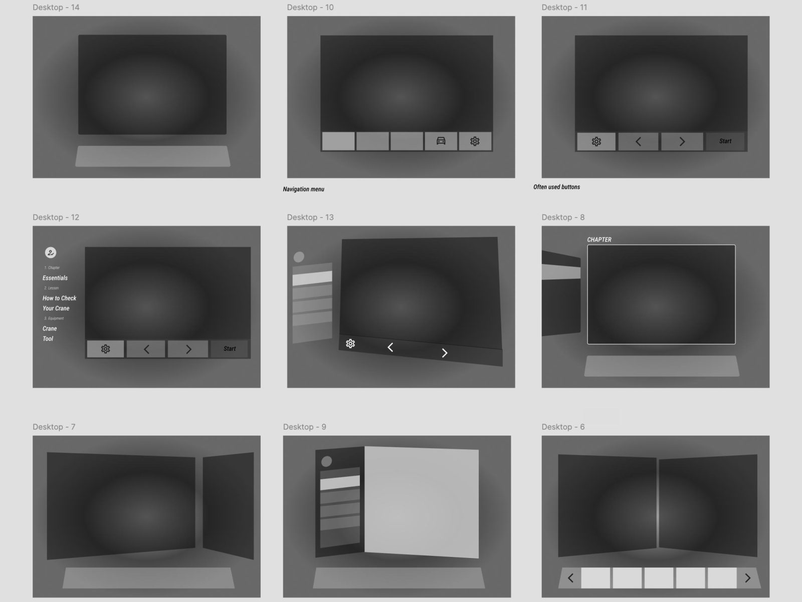
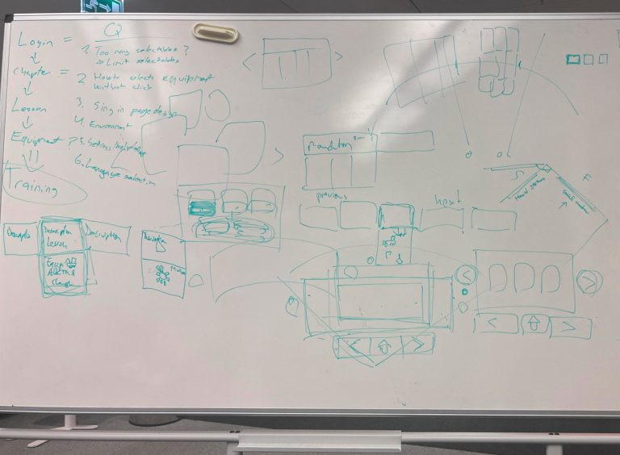
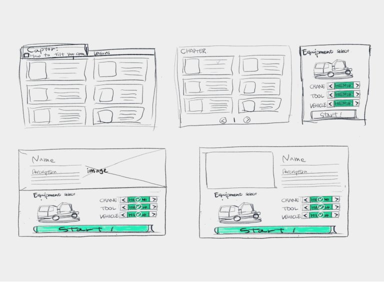

HiSkill
Scalable main navigation menu
HiSkill is a VR-based crane operator training simulator designed to provide safe, scalable, and cost-effective training. By combining virtual reality with actual equipment, it provides a realistic training environment where operators can practice handling challenging situations without real-world risks. I redesigned the onboarding experience from sign-in to the main navigation menu.
The designs are confidential and can't be shown publicly. I'm happy to walk through the design personally.

My role
My focus was on making the experience approachable for operators new to VR, redesigning the onboarding flow, first-use experience, main navigation, and start screen to create a more intuitive way into the training.
As a UX Designer, I was responsible for:
- Make the introduction to the service easy so that users can onboard quickly.
- Run user research and usability tests.
- Prototype and test the design.
- Communicate closely with developers and stakeholders.
Goals
-
Making HiSkill easier to approach for users who have never used a VR product before.
-
The navigation menu scales across different cultures and markets.
Process
-
Understand the medium
Before designing for VR, I first needed to understand the medium from a user's perspective. My previous VR experience was limited to a few games, so I explored a range of VR applications across education, fitness, and gaming, paying particular attention to onboarding, navigation, and interaction patterns.
I also reviewed VR UX literature and established design guidelines, then tested HiSkill myself to identify friction points and opportunities for improvement. This research helped me understand what could make the experience feel more familiar and approachable for first-time VR users.

-
Align on the challenge
With a better understanding of the medium, I worked with the cross-functional team—including developers and the project manager—to align on the key challenges and priorities.
Through a design workshop, we mapped the issues identified so far, discussed possible directions, and aligned on both short- and long-term goals. This helped us distinguish between immediate UX improvements and structural decisions that would support the product as it expanded into different markets.
-
Explore & design
The main design challenge was to make HiSkill approachable for users who had little or no previous VR experience, while creating a navigation structure flexible enough to support different markets, languages, and content.
I explored different approaches to onboarding and navigation through wireframes and prototypes. For the onboarding experience, the focus was on introducing the VR environment and essential interactions gradually, without overwhelming users with unfamiliar information.
For the main navigation, I explored a more flexible structure that could accommodate different content and market requirements while maintaining a consistent experience. Technical feasibility was considered throughout the design process, with close collaboration with developers.


-
Test & iterate
Prototypes were presented to the team to gather feedback and identify potential issues before usability testing. Due to time and budget constraints, testing was conducted internally with employees who had relevant experience.
Participants completed predefined tasks while wearing the VR headset, allowing me to observe how they navigated the experience in a realistic setting. Follow-up interviews helped uncover not only usability issues but also how first-time users understood the interactions and information presented to them.
The findings were then brought back into the design process. I iterated on the onboarding and navigation based on the observed behavior and feedback, gradually refining the experience to make it clearer, more approachable, and easier to navigate.
Impact & result
The redesign created a more approachable and scalable experience for HiSkill, addressing key usability challenges in both onboarding and navigation.
A more approachable first experience
The redesigned onboarding provided clearer guidance for users who were new to VR, helping them understand the environment and essential interactions before entering the training experience.
Clearer and more intuitive navigation
The new main navigation simplified the overall information structure and made it easier for users to understand where to go and how to start their training.
A more flexible foundation for different markets
The navigation structure was designed with different languages, content, and market requirements in mind, making it easier to adapt the experience without redesigning the entire structure for each market.
Validated through user testing
Usability testing showed that 100% of participants felt the new menu improved the overall look and feel of HiSkill. The testing also revealed opportunities for further refinement, which were incorporated into subsequent design iterations.